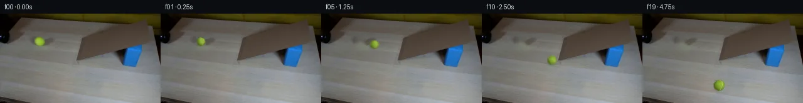

![首帧]()

Round 00
2026-11-05T07:28:05.374940+00:00像素候选变化代码 +274/−0inspection 更新
pixels e201af59bafe6aeb · code 410a746675a69df9
查看本轮 generate.py 真实 diff
--- previous/generate.py +++ current/generate.py @@ -0,0 +1,274 @@ +"""PixelWorld-Text case_0021 generator. + +Tennis ball rolls out of the black pipe, down the cardboard ramp tongue, +drops a few pixels onto the light wooden table, and rolls to rest toward the +camera. Frame 00 is byte-identical to first_frame.png; every other frame is +the same static scene (clean plate) with only the ball and its shadow moved. + +Method: local Python pixel operations only (numpy, cv2.inpaint, analytic +sphere shading with a quaternion-rotated tennis seam and exposure-time +sub-sampling for motion blur). +""" +import math +import numpy as np +import cv2 +from PIL import Image, ImageDraw, ImageFont +from artifact_io import save + +# ---------------------------------------------------------------- constants +W, H = 256, 144 +DT = 0.25 +EXPOSURE = 0.12 # seconds covered by motion-blur sub-samples +NSUB = 5 + +P0 = np.array([62.0, 44.5]) # frame-00 ball center +R0 = 7.0 +V0 = 7.0 # px/s along ramp at t=0 +A_RAMP = 18.64 # px/s^2 +DR = np.array([0.976, 0.219]) # ramp fall-line in image coords +T_LEAVE = 1.625 # ball centre reaches ramp toe ... +S_LEAVE = V0 * T_LEAVE + 0.5 * A_RAMP * T_LEAVE ** 2 +P_LEAVE = P0 + S_LEAVE * DR +LAND_P = np.array([107.5, 58.2]) # first table contact at t = T_LAND +T_LAND = 2.0 +HOP_PEAK = 2.4 +V_TABLE = 38.0 +A_TABLE = 12.0 +DTAB = np.array([0.25, 0.97]) # table travel direction (toward camera) + +LIGHT = np.array([0.55, -0.30, 0.78]) +LIGHT /= np.linalg.norm(LIGHT) +ALBEDO = np.array([150.0, 191.0, 55.0]) +RIMCOL = np.array([118.0, 124.0, 92.0]) + + +# ----------------------------------------------------------------- geometry +def ramp_radius(t): + return R0 + 0.25 * (t / T_LEAVE) + + +def table_radius(u): + return 7.5 + 1.6 * min(u / 3.0, 1.0) + + +def state(t): + """Return (center(2), radius, ground(2), velocity(2), airborne).""" + if t <= T_LEAVE: + s = V0 * t + 0.5 * A_RAMP * t * t + v = V0 + A_RAMP * t + c = P0 + s * DR + return c, ramp_radius(t), c.copy(), v * DR, False + if t < T_LAND: + u = (t - T_LEAVE) / (T_LAND - T_LEAVE) + ground = P_LEAVE + (LAND_P - P_LEAVE) * u + lift = HOP_PEAK * math.sin(math.pi * u) + c = ground + np.array([0.0, -lift]) + vg = (LAND_P - P_LEAVE) / (T_LAND - T_LEAVE) + return c, 7.4, ground, vg, True + u = t - T_LAND + s = V_TABLE * u - 0.5 * A_TABLE * u * u + c = LAND_P + s * DTAB + v = max(V_TABLE - A_TABLE * u, 0.0) + return c, table_radius(u), c.copy(), v * DTAB, False + + +# ------------------------------------------------------- quaternion helper +def q_mul(a, b): + w0, x0, y0, z0 = a + w1, x1, y1, z1 = b + return np.array([ + w0 * w1 - x0 * x1 - y0 * y1 - z0 * z1, + w0 * x1 + x0 * w1 + y0 * z1 - z0 * y1, + w0 * y1 - x0 * z1 + y0 * w1 + z0 * x1, + w0 * z1 + x0 * y1 - y0 * x1 + z0 * w1, + ]) + + +def q_rotate(q, v): … diff truncated; 187 more lines …